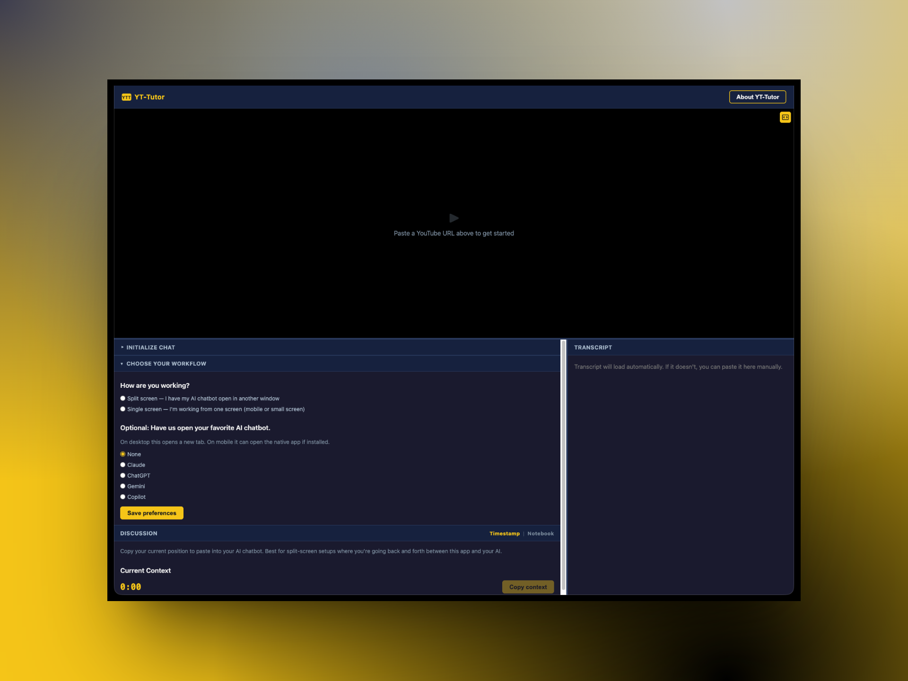
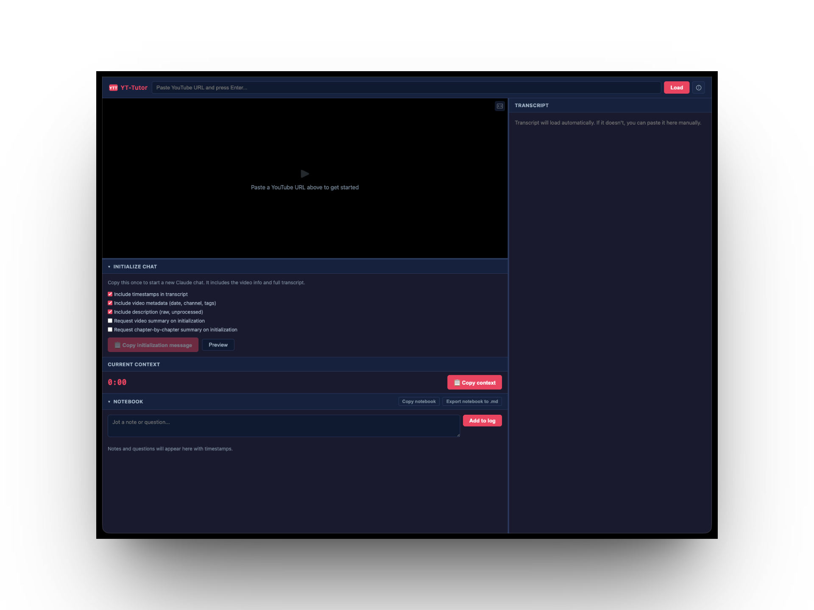
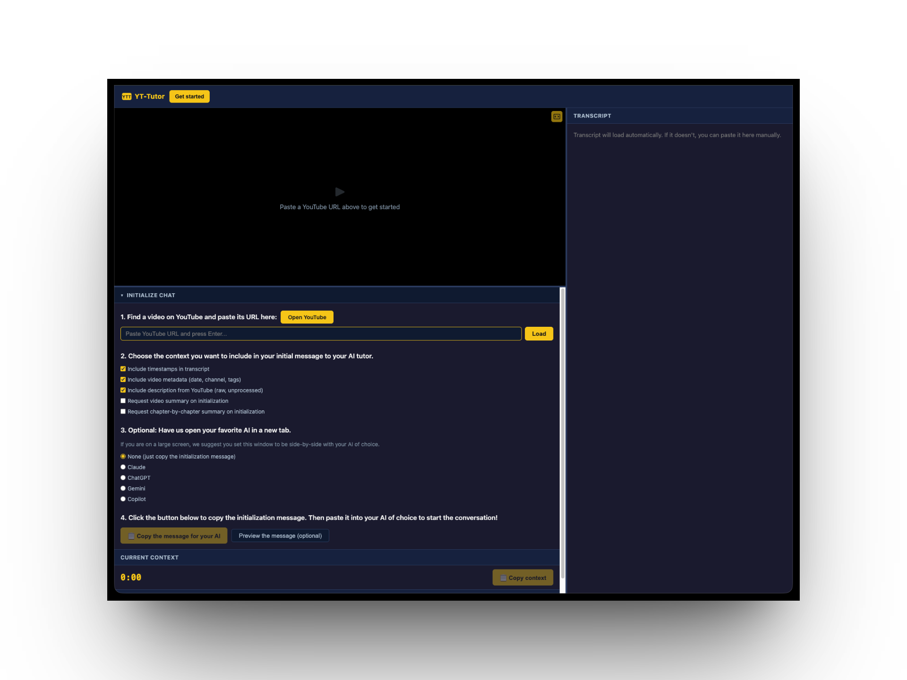

Bantr
EdTech Product — AI Learning Companion
Try the App → (opens in new tab)
Why This Exists
Before I was a designer, I was a physics teacher. Before that, a materials science engineer. In every role I kept seeing the same thing — structural problems that no single discipline could fix alone. Designers diagnose problems but rarely have the authority to implement the solutions. Engineers build solutions but get handed specs, not problems.
What I took from teaching was more personal: I loved watching kids engage with material they were genuinely curious about, and I hated watching that curiosity get ground down by a system designed for compliance. I wanted to design for curiosity rather than compliance — but that's hard to do from inside a system that measures attendance and test scores.
Bantr is what happens when the engineering skills, the design skills, and the experience working as a teacher all exist within one person. I can stop trying to fix the system from inside and start building something from outside it.
The industrial school system was designed to produce outputs: papers, tests, performance. When you give kids AI in a system that asks for outputs, they use it to produce outputs. Cognitive offloading. Who can blame them? But what about an "unschool" where kids could learn, guided by both their interests and adults that want to see them succeed.
Bantr bets on a different model. If you meet kids where their curiosity already lives — YouTube, TikTok, the things they're already watching — and give them an AI companion that takes their questions seriously, they use AI for cognitive scaffolding, not offloading. They use it to think more, not less.
The feeling it's going for: like going to the library to study with a friend. You didn't necessarily want to study. But at least you got to hang out with your friend, and somehow two hours passed and you actually learned something and it didn't feel like punishment. The companion isn't a tutor above you. It's a friend who showed up first and saved you a seat.
The Product
Bantr is a free learning companion that sits alongside YouTube and helps you go deeper into any video through conversation with AI. You find a video, bring it into Bantr, and banter about it — with an AI that's already there, already interested in what you're interested in.
The current version is a web app. You paste a YouTube URL, Bantr pulls the transcript, metadata, and timestamps, then packages it as a structured initialization message you can paste into any AI — Claude, ChatGPT, Gemini, whatever you already use. No subscription. No account required. Bring your own AI.

The Intervention
I deployed the first version and ran a usability test with a user who was comfortable with YouTube but had no prior experience with AI tools. The test revealed a fundamental onboarding problem: the user opened the app and had no idea what to do. They didn't understand that Bantr was a preparation tool, not the AI itself. They couldn't identify the workflow steps or figure out what to do with the initialization message once it was generated.
The core issue wasn't a UI polish problem — it was a missing mental model. The app assumed a workflow that didn't exist in the user's head.
I redesigned the onboarding into four explicit numbered steps:
- Find a video — paste a URL, or open YouTube to browse
- Choose your context — select what to include in the initialization message
- Pick your AI — Claude, ChatGPT, Gemini, or Copilot, opened alongside in a new tab
- Copy the message — paste it into your AI and start the conversation
The app also accounts for different screen setups. On a large screen, users can place Bantr side-by-side with their AI and use the 'Copy context' button to pass timestamped video context mid-conversation. On mobile or single-screen setups, a built-in notebook lets users jot timestamped notes and questions while watching, then export them as markdown.

Where It's Going
The web app validated the core idea — kids engage more deeply with video content when they can have a conversation about it — but it also confirmed that a side-app doesn't work. Asking users to copy-paste between windows is too much friction, especially for a 10-14 year old. The AI needs to be inside the experience, not alongside it.
The next version is a Chrome extension with a built-in AI API — one click to "Bantr about it" while watching YouTube, no window-switching, no setup. From there, Bantr becomes a learning companion that grows with a child over time — adapting to how they think, remembering what they've explored, and eventually connecting across video, books, primary sources, and articles.
Try It
Bantr is free and open source. Find a YouTube video you're curious about and start a conversation.